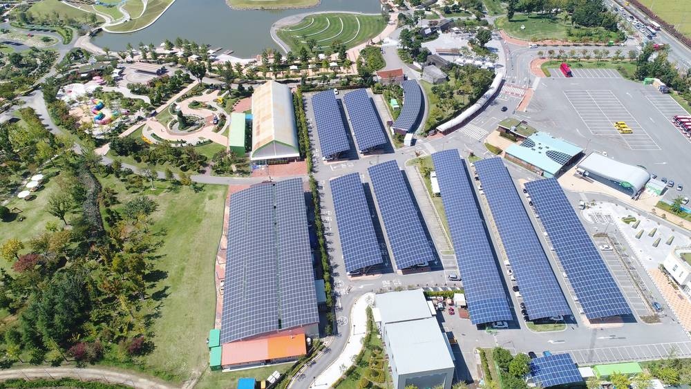

전남광주시의회 "계통 못 잇는 태양광은 희망고문"…햇빛소득마을 126곳 중 바로 접속 가능한 곳 5곳뿐

신민호 의원, 에너지산업본부 행정사무감사서 지적…영광 월평마을 1MW에 18억 원 들였지만 수익 없어, "소규모 농가 우선·주민 균등 참여 보장해야"
전남광주통합특별시가 햇빛소득마을 공모에서 전국 최다인 126개 마을이 선정됐다고 내세우고 있지만, 지금 바로 전력계통에 접속할 수 있는 마을은 5곳뿐이라는 지적이 광역의회에서 나왔다. 신민호 의원(순천6)은 10일 에너지산업본부 행정사무감사에서 계통 확보 없이 태양광 보급을 서두르면 주민에게는 "희망고문"일 뿐이라고 비판했다. 신 의원은 2025년 영광 월평마을에 18억 원을 들여 1MW 규모 발전시설을 준공했지만 계통에 연결되지 못해 지금까지 발전수익이 전혀 나지 않았다고 밝혔다. 에너지저장장치(ESS)를 연계한 사업도 준비 단계에 머물러 착수 시점이 불투명하다고 짚었다. 그는 영농형 태양광이 대규모 발전사업 중심으로 흐르는 것을 경계하며 자본력 있는 기업·법인보다 실제 농촌에 사는 소규모 농가에 참여 기회를 먼저 줘야 한다고 주장했다. 또 마을이 사업비의 15%를 스스로 부담하는 구조에서는 출자 여력이 있는 일부 주민에게 혜택이 쏠릴 수 있다며 주민 모두에게 균등한 기회를 보장하라고 요구했다.
시민에너지 관점
독일은 재생에너지법(EEG)으로 계통 운영자에게 재생에너지 설비를 우선 접속시킬 의무를 지워, 주민 발전소가 준공 뒤 연결만 기다리며 멈춰 서는 일을 제도로 막아 왔다. 126개 마을 선정이 성과가 되려면 준공과 접속 시점이 맞물려야 하고, 그 전까지는 ESS나 마을 안 자가소비 같은 대안이 함께 설계돼야 한다. 15% 자부담이 걸림돌이라면 공공 융자나 지역 기금으로 출자금을 빌려줘 형편이 어려운 주민도 똑같이 지분을 갖게 할 수 있다. 특별시는 마을별 접속 가능 시점을 공개하고, 계통이 없는 곳부터 대안 계획을 내놓아야 한다.
출처: 브레이크뉴스 2026-11-14 이학수 원문 보기
全南光州市議会「系統につなげない太陽光は希望拷問」…ひだまり所得村126カ所のうち即時接続できるのは5カ所だけ
シン・ミンホ議員がエネルギー産業本部の行政監査で指摘…霊光・月坪村の1MWに18億ウォン投じたが収益ゼロ、「小規模農家優先・住民の均等参加を保障すべき」
全南光州統合特別市は「ひだまり所得村」公募で全国最多の126村が選ばれたと宣伝しているが、いますぐ電力系統に接続できる村は5カ所にすぎないとの指摘が広域議会で出た。シン・ミンホ議員（順天6）は10日、エネルギー産業本部の行政事務監査で、系統の確保なしに太陽光の普及を急げば住民にとっては「希望拷問」にすぎないと批判した。シン議員によると、2025年に霊光郡の月坪村で18億ウォンを投じて1MW規模の発電設備が完成したが、系統に接続できず、これまで発電収益はまったく出ていない。エネルギー貯蔵装置（ESS）と連携した事業も準備段階にとどまり、着手時期は不透明だという。シン議員は営農型太陽光が大規模発電事業中心に流れることを警戒し、資本力のある企業・法人よりも農村に実際に暮らす小規模農家に参加の機会を優先して与えるべきだと主張した。また、村が事業費の15%を自己負担する仕組みでは出資の余力がある一部住民に恩恵が偏りかねないとして、住民全員に均等な機会を保障するよう求めた。
市民エネルギーの視点
ドイツは再生可能エネルギー法（EEG）で系統運用者に再エネ設備の優先接続義務を課し、住民の発電所が完成後に接続待ちで止まる事態を制度で防いできた。126村の選定を成果にするには完成と接続の時期をかみ合わせ、それまではESSや村内の自家消費といった代替策を併せて設計する必要がある。15%の自己負担が壁なら、公的融資や地域基金で出資金を貸し付け、経済的に厳しい住民も同じように持ち分を持てるようにできる。特別市は村ごとの接続可能時期を公開し、系統のない所から代替計画を示すべきだ。
出典: 브레이크뉴스 2026-11-14 이학수 原文を読む
全南光州市议会："接不上电网的光伏是希望折磨"…126个阳光收入村中能立即并网的仅5个
申珉浩议员在能源产业本部行政监察中指出：灵光月坪村1MW电站投入18亿韩元却零收益，"应优先小农户、保障居民平等参与"
全南光州统合特别市宣传称，在"阳光收入村"公募中有全国最多的126个村入选，但广域议会指出，目前能立即接入电网的村仅有5个。申珉浩议员（顺天第6选区）10日在能源产业本部行政事务监察中批评说，不先确保电网就急于推广光伏，对居民来说只是"希望折磨"。申议员表示，2025年灵光郡月坪村投入18亿韩元建成1MW发电设施，但因未能并网，至今没有任何发电收入。与储能系统（ESS）联动的项目也仍停留在准备阶段，启动时间不明。他对农光互补项目偏向大型发电项目表示担忧，主张应优先让真正生活在农村的小农户而非资本雄厚的企业和法人参与。他还指出，在村庄须自担15%项目费用的结构下，收益可能集中到有出资能力的少数居民身上，要求保障全体居民的平等机会。
市民能源视角
德国通过《可再生能源法》（EEG）规定电网运营商负有优先接入可再生能源设施的义务，从制度上防止居民电站建成后因等待并网而闲置。要让126个村入选真正成为成果，竣工与并网时间必须衔接，在此之前还应同步设计储能或村内自用等替代方案。如果15%的自担比例是障碍，可以通过公共贷款或地方基金借出出资金，让经济困难的居民同样持有股份。特别市应公开各村可并网时间，并从没有电网条件的地方开始拿出替代计划。
来源: 브레이크뉴스 2026-11-14 이학수 查看原文
South Jeolla-Gwangju councillor: solar without grid access is "false hope" — only 5 of 126 sunlight income villages can connect now
Councillor Shin Min-ho tells audit that a 1 MW plant in Yeonggwang's Wolpyeong village cost 1.8 billion won but has earned nothing; calls for small farmers first and equal resident participation
The South Jeolla-Gwangju integrated special city touts the selection of 126 villages, the most in the country, under the national "sunlight income village" programme, but only five of them can connect to the power grid right away, a regional councillor said. At an administrative audit of the city's energy industry division on the 10th, Councillor Shin Min-ho (Suncheon 6) said that pushing solar without first securing grid capacity amounts to "cruel false hope" for residents. He said a 1 MW plant completed in 2025 in Wolpyeong village, Yeonggwang county, at a cost of 1.8 billion won has generated no revenue at all because it has not been connected to the grid. Projects linked to energy storage systems (ESS) also remain at the preparation stage with no clear start date, he added. Warning that agrivoltaics is drifting toward large-scale generation, he argued that small farmers who actually live in rural areas should get priority over well-capitalised companies. He also said that requiring villages to fund 15% of project costs themselves risks concentrating benefits among residents who can afford to invest, and called for equal opportunity for every villager.
Citizen Energy View
Germany's Renewable Energy Sources Act (EEG) obliges grid operators to connect renewable plants as a priority, preventing by law the situation where a community plant sits idle after completion waiting for a connection. For the selection of 126 villages to count as an achievement, completion and connection dates must line up, with alternatives such as storage or on-site village consumption designed in the meantime. If the 15% contribution is a barrier, public loans or local funds can lend residents the equity so that poorer households hold the same stake. The special city should publish when each village can connect and present fallback plans starting with places that have no grid capacity.
Source: 브레이크뉴스 2026-11-14 이학수 Read the original